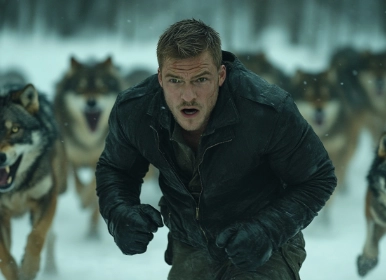
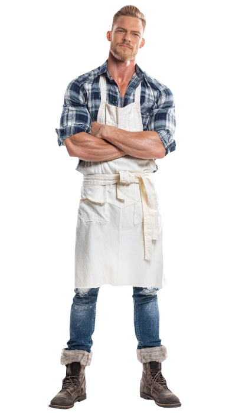
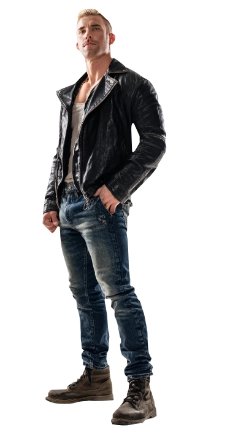
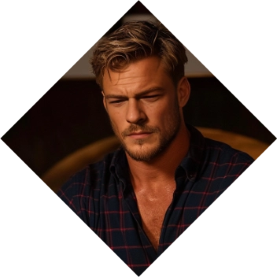
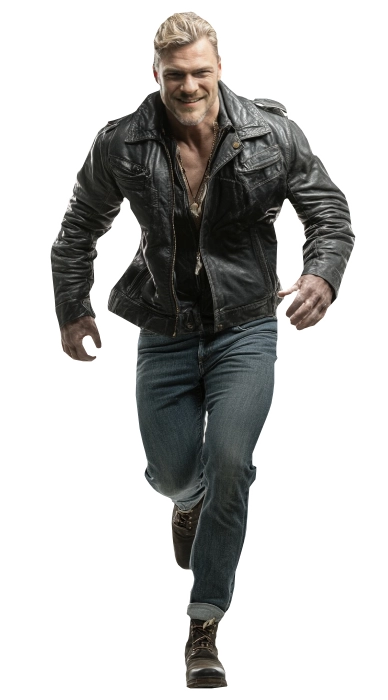

Rich Bélanger
Rich Bélanger
The Old Wolf
Richmond Archibald Bélanger, a towering werewolf of immense strength, has orchestrated triumphant campaigns against the insidious forces of PENTEX and ENDRON, thwarting the Wyrm's malevolent designs. Leveraging his military prowess, he now pioneers an unconventional path of healing. In the quietude of baking, cooking, and crafting, Richmond discovers a therapeutic sanctuary, both for himself and his brothers.
His bakery, a clandestine haven, conceals the operations of his pack, a covert force combating the encroaching darkness. Richmond, a believer in the power of restoration, seeks to mend not just the physical wounds but the wounded spirits of his fellow warriors, fostering resilience and hope amid the ongoing battle for balance. ❧
Plot Hooks.
Nurturing. As a Garou he has come to understand that his role is to teach, train and support other werewolves into becoming the fine soldiers that this war needs. As an older and knowleageable werewolf he's a "Kinseeker": constantly finding new werewolves about to enter their First Change so he can train them.Signature Motif.
Cooking. He truly enjoys cooking, baking and making food for himself and others. He's quite the skilled individual. He's dedicated to bakery and the small cafeteria/bakery that he owns is also the front to the operation launched to thwart the forces of the Wyrm. One bread loaf at a time.Perfect for...
Domestic and romantic sex scenes. If you are looking for a man who kisses you in the morning, makes the breakfast, takes the kids and you to your destinations and then when night comes he fucks you into bed, full of cream, then this is the one for you.Goal
Nurturing.
Rich understands, quite well, that werewolves are against the ropes. At this age he's living, they are probably facing extinction unless they do something to change the tides of the war. At first, he believed that hitting PENTEX was the only way to go, but little by little he realized that the true problem laid in werewolves themselves: their wrath and intrigues, their powerlust led them to blind pursuits. If only there was somebody who could teach them HOW to act...
obstacle
Lycanthropy.
However, Rage has a way to seep in everything a werewolf touches. Their existence is forever condemned because that which they protect may end up damaged between their paws. Rich has tried with a fair amount of success to contain his wrath by cooking. He's realized that nurturing others has helped him quite well and thus why he took the role of Kinseeker, finding soon-to-be werewolves to train them... but their bellicose nature has a way to betray the Garou at times.«Whoa, oh, your city lies in dust, my friend»
Personal Data
⭮


Richmond Archibald Bélanger
Name
42
Age
09/Dec/1983
DOB
Hartwardens
Tribe
Blonde
Hair
Blue
Eye color
Galliard
auspice
White
Ethnicity
Canadian
Nationality
8 / Glory
Renown
1.91m
Height
102 kg
Weight
English and French
Languages
Male
Gender
Homosexual
Preference
Baker
Profession
Top
Position
7" / 4.5"
length / Girth
Allan Ritchson / Chris Pratt
Faceclaim
Tenderpelt
True Name
ESTP
MBTI
Character sheet
Attributes
Distinctions
skills
Patron
Stag

Nature
Caregiver
Demeanor
Mentor


⭮
Knowledgeable
Supportive
Patient
Nurturing
Dedicated
Pedantic
Overbearing
Intrusive
Idealistic
Vulnerable
Supportive
Patient
Nurturing
Dedicated
Pedantic
Overbearing
Intrusive
Idealistic
Vulnerable
Passionate
Proactive
Courageous
Idealistic
Determined
Aggressive
Exhausting
Impatient
Idealistic
Intolerant
Proactive
Courageous
Idealistic
Determined
Aggressive
Exhausting
Impatient
Idealistic
Intolerant
Strength
Dexterity
Stamina

Charisma
Manipulation
Composure
Intelligence

Wits
Resolve
Renown
🙪
Specialties
Baking
First Aid
Standard drive
Singing
Craft
Performance
Insight
Survival
Persuasion
Awareness
Athletism
Animal Ken
Brawl
Occult
Expression
Drive
Subterfuge
Academicism
Expression
Other skills

Will of the Werewolves
Ways
Regeneration
Unless it's by fire, silver or by any other damage marked as aggravated, damage is reduced by 1 category before noted. Werewolves in any supernatural form can reduce damage 1 category in damage per round.
Tribe Spirit: Stag
Can add a D6 to any roll of Survival, Crafts and Animal Ken related to the Forest.
Frenzy
Werewolves enter Crinos shape and ignore any impairments. They also reduce the effect dice two categories for mental abilities or effects against them. They cannot use gifts and usually they leave Frenzy once all of their enemies are dead or incapacitated, then they loose the Wolf.
Wanton
Silver
Silver is specially malignant to werewolves in supernatural form who will receive aggravated damage from it, upping one category in the silver damage.
Tribe Bane: Stag
Receive a D6 disadvantage if anyone is harm under your care.
Rage
Allows them to call upon magical abilities granted by the Spirits called "Gifts". However, these are only present if the Wolf has not been lost.
The Garou Forms
Besides Human form (which grants immunity to Silver and no regeneration) these are the other four forms a Werewolf can take.

Glabro
The Near-Human
Humans feel uneasy in the presence of this shape, reducing one category on the effect dice of any social roll.Receive a D6 in all Physical rolls.
Reduce physical stress by one category per turn.

Crinos
The War Form
Ordinary communication is impossible. Humans experience Delirium when in the presence of the Crinos. Receive a D10 in all Physical rolls.
Receive a D8 advantage "Claws" when involved in Brawl contests.
Receive a D6 advantage "Bite" when involved in Brawl contests.
Receive a natural D8 defense for any damage except Silver, Fire or marked as Aggravated. (Which means only effect dice above D8 can harm you.)
Reduce physical stress by two categories per turn.

Hispo
The Dire Wolf
Receive a D6 in all non-Stealth physical rolls.Receive a D6 advantage "Bite" when involved in Brawl contests.
Reduce physical stress by one category per turn.

Lupus
The Wolf
Cannot regenerate, but it's unaffected by silver.Receive a D6 in Stealth or Survival physical rolls.
Cannot communicate verbally, only through body language with wolves and other Garou
Gifts
Gifts maked with ✧ are only available for Adult Rich.
Native
Homid Gifts
Raging BlowUp the category of the effect dice when attacking enemies.
Spirit of the FrayDramatic. Can attack various targets at the same time.
Tongue of the Beasts (✧) Dramatic. Allows Rich to speak to other animals.
Galliard
Auspice Gifts
Animal MagnetismAble to draw the attention (or the rejection) of humans. Add a D6 to any Social rolls.
Song of RageDramatic. Rise the Rage of any werewolves hearing the song.
Song of Serenity (✧) Dramatic. Reduce the Rage of any werewolves hearing the song.
Hart Warden
Tribe Gifts
Blessed BrewCan enchant liquids that when drink receive his own power to resist mental assaults and surpass any fear.
Song of Inspiration (✧) Create a D6 advantage for any of the people hearing the song.
Backgrounds



Signature Assets
Looks: Stunning
Add A D8 to any social rolls where looks are required.
Awakened Caern
Belongs to a Sept that wards a Caern in the outskirts of Montreal, specifically in the Île Grosbois. the Caern is protected by natural and supernatural wards, specifically, from the animal spirits and the river spirits around the Island.
Monkeywrencher
Part of a global movement of werewolves dedicated to eliminate all of PENTEX fronts, which allows him to create events and bashes with a specific aim at hand.
Other Assets
Contacts
A group of characters who serve him information or weapons. Players are welcome to take these roles in order to connect with Rich.
Spirit Pact
Richmond has made a pact with the spirit of Wheat, which not only makes his pastries perfect all the time, but also, grants him immunity and protects his safe haven by making it invisible to the eyes of his enemies, so long he "feeds the hungry and supports the growth of children".
Safe Haven
"Howl-n-Rolls" is a establishment well known for the past few years with a steady clientele that constantly comes for their coffee and chocolate and of course, for their daily fresh bread. The place acts as a safe haven for him and his pack, protected by the pact he's got with the spirit of Wheat.